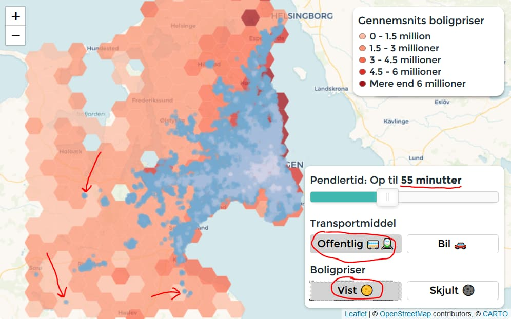

Billige-boliger.nu - Find områder med billige boliger tæt på København
Min kæreste og jeg har den seneste tid kigget efter boliger i kort pendlerafstand til København. Et spørgsmål jeg blev ved med at stille mig selv var:
Hvordan kan jeg finde områder tæt på København med billige boliger?
For at svare på netop det spørgsmål har jeg lavet et kort 🗺️ 👇👇👇
Rejsetid til København
- 0 - 20 min
- 20 - 40 min
- 40 min - 1 time
- 1 time - 1 time 20 min
- Mere end 1 time 20 min
Detaljer
De blå prikker viser hvor langt fra København man kan bo og stadig ankomme på Hovedbanegården mandag morgen kl 9.
Boligpriserne er baseret på boliger solgt i 2018 og 2019.
💡🕵️ Hvis du vil finde de områder med billige boliger så kig efter de lysere røde områder med blå prikker indeni. Se eksempler
Analyse
Hvis vi kun kigger efter områder med billige boliger i op til 55 min fra København med offentlig transport så kan man finde 3 byer: Endeslev, Tølløse og Glumsø. Jeg vil gå lidt i detaljer med Glumsø
Glumsø
Lad os tage et kig på Glumsø. Det er en by 50 minuter fra København, tæt på natur og man kan få fantastiske boliger ligesom boligen herunder for 1.995.000 kr. JA det er under 2 millioner 😲 (teknisk set i hvertfald).
Afslutning
Hvis du har nogle kommentarer så skriv til mig på benjamin.dals.hughes@gmail.com
Lavet af Benjamin Hughes
Ide af Benjamin Hughes og Anders Munk Nielsen
Det her er noget jeg har bygget fordi jeg tænker at det ville være brugbart for andre i samme situation som mig. Jeg har brugt en del tid på det. Så hvis du gerne vil smide en skilling efter mig ville det være super værdsat 😃👍